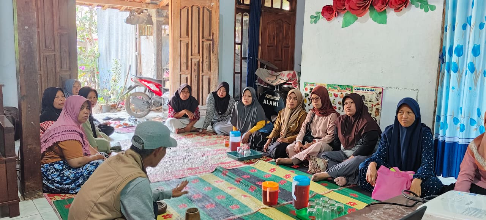
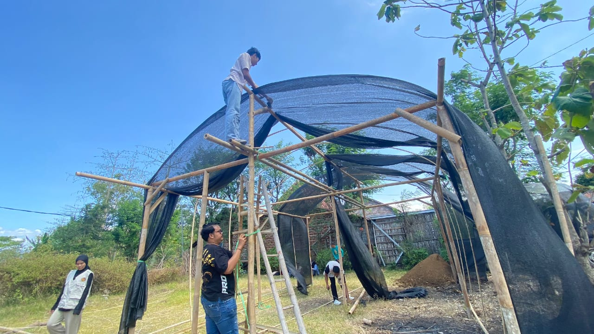
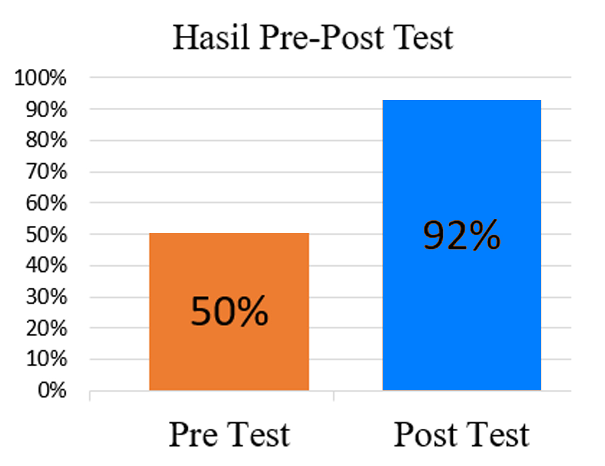

Program Green Pocket Tingkatkan Kapasitas Kelompok Wanita Tani Desa Mlarak
Anggota KWT Seruni antusias mengikuti sosialisasi program Green Pocket di Desa Mlarak
PONOROGO - Kelompok Wanita Tani (KWT) Seruni Desa Mlarak, Kecamatan Mlarak, berhasil meningkatkan kemampuan budidaya organik hingga 42% melalui program Green Pocket yang dilaksanakan Universitas Merdeka Malang. Program inovatif ini menerapkan konsep ekonomi sirkular dalam pertanian skala rumah tangga.
Shade House Jadi Pusat Kegiatan Pertanian Organik
Program yang berlangsung pada 29 Juli hingga 31 Agustus 2025 ini berhasil membangun shade house berukuran 7x5 meter dengan gotong royong seluruh anggota KWT. Fasilitas ini menjadi tempat budidaya 250 polibag berisi tanaman sayuran cepat panen seperti seledri, terong, dan cabai. "Kami sangat antusias dengan program ini. Sekarang pekarangan yang dulu kosong bisa produktif," ujar salah satu anggota KWT Seruni saat ditemui di lokasi kegiatan.
Gotong royong pembangunan shade house dan proses penanaman sayuran dalam polibag
Limbah Rumah Tangga Jadi Pupuk Organik
Keunggulan program Green Pocket terletak pada penerapan ekonomi sirkular yang mengubah limbah organik rumah tangga menjadi pupuk kompos. Anggota KWT diajarkan membuat media tanam dari campuran tanah, sekam bakar, pupuk kandang, dan pupuk cair dengan komposisi optimal. Tim pengabdi yang dipimpin Dendy Eta Mirlana dari Universitas Merdeka Malang PDKU Ponorogo menjelaskan, program ini dirancang khusus untuk memberdayakan perempuan tani melalui teknologi pertanian berkelanjutan yang mudah diterapkan.
Sistem Irigasi Sederhana Hemat Air
Inovasi lain yang diterapkan adalah sistem irigasi menggunakan pipa PVC berlubang yang terhubung langsung dengan sumber air warga. Sistem ini tidak hanya menghemat air, tetapi juga memudahkan perawatan tanaman secara berkelompok. "Dulunya kegiatan KWT hanya arisan dan simpan pinjam. Sekarang kami punya kegiatan produktif yang bisa menambah penghasilan keluarga," kata Ketua KWT Seruni.
Hasil Pre-Post Test Menunjukkan Peningkatan Signifikan
Evaluasi program menggunakan metode pre-test dan post-test pada 10 indikator pemahaman tentang pertanian organik dan ekonomi sirkular. Hasilnya menunjukkan peningkatan dari skor 50% menjadi 92%, atau naik 42%.
Grafik menunjukkan peningkatan pemahaman KWT Seruni dari 50% menjadi 92%
Potensi Replikasi di Desa Lain
Kepala Desa Mlarak memberikan apresiasi tinggi terhadap program ini dan berkomitmen mendukung keberlanjutannya. "Program Green Pocket sangat sesuai dengan visi pembangunan desa yang berkelanjutan dan ramah lingkungan," ujarnya. KWT Seruni yang beranggotakan 30 orang dan dibentuk pada 2022 ini kini memiliki modal sosial yang lebih kuat melalui kegiatan gotong royong dalam setiap tahapan program.
Meski Panen Belum Optimal, Antusiasme Tinggi
Meskipun hasil panen belum mencapai target penuh selama periode program, antusiasme anggota KWT dalam merawat tanaman secara mandiri menunjukkan adopsi yang menjanjikan. Banyak anggota menyatakan tertarik mengembangkan sistem serupa di pekarangan masing-masing. Program ini diharapkan dapat menjadi model kewirausahaan perempuan desa yang berkelanjutan dan dapat direplikasi di wilayah lain dengan kondisi serupa.